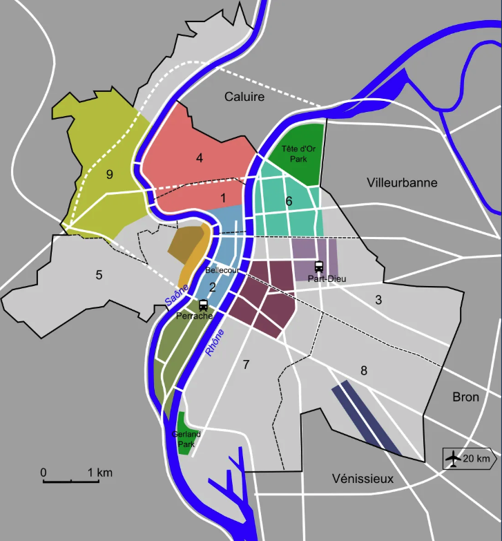
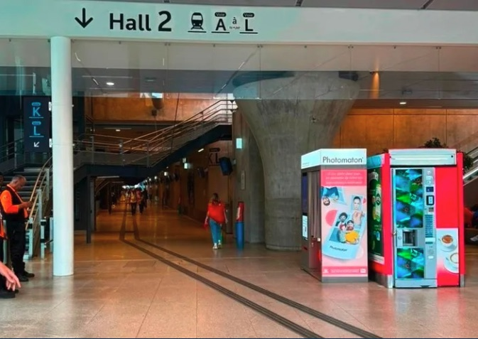
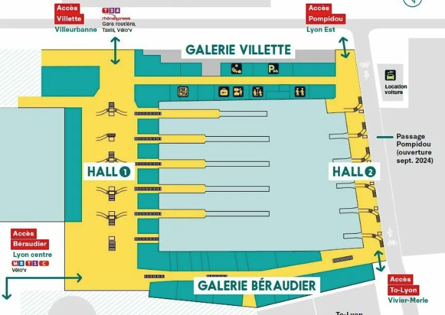
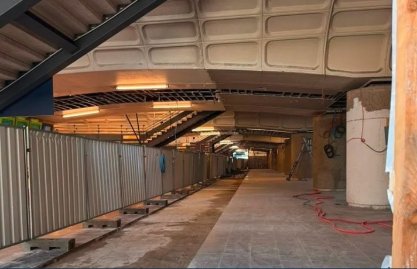
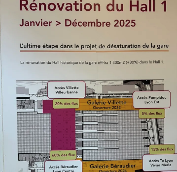
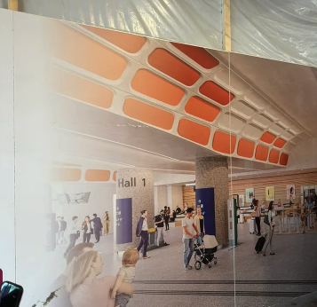
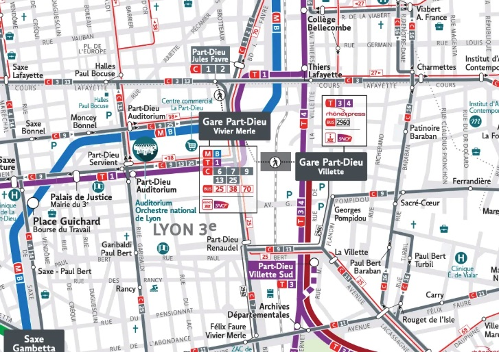
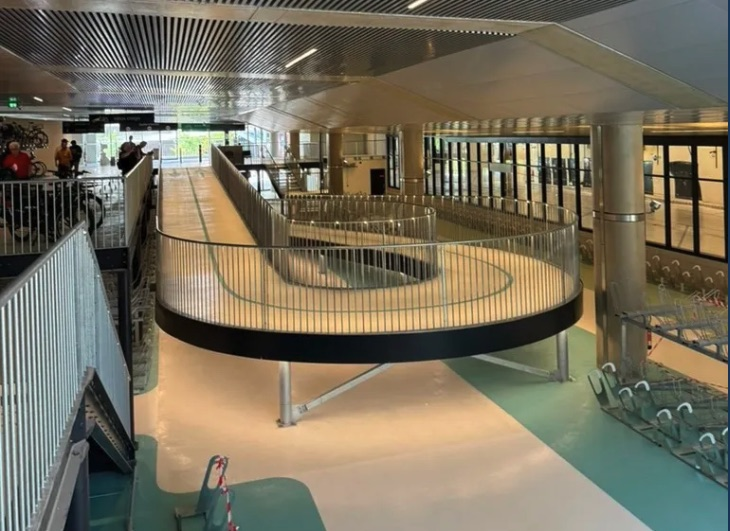
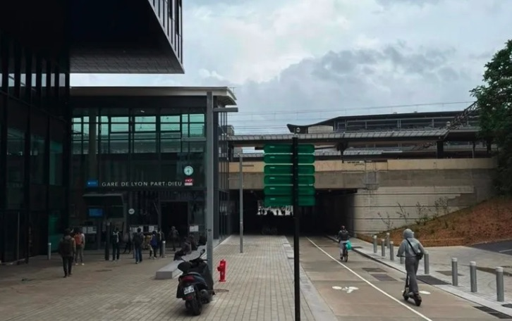

Lyon-Part-Dieu: An urban travel hub transformation
Paris isn’t the only French city that’s undergoing a massive transformation that’s centered around transport.
Lyon, France’s third-largest city and most important economic hub outside of the French capital, is undergoing a massive transformation in its central district around its main railway station. The local and regional governments are investing hundreds of millions of Euros into creating a new lively urban center with offices, housing, commercial activity, hotels, green space, and more in its Part-Dieu neighborhood.
A centerpiece to this transformation is Lyon’s main railway station, Gare de Lyon-Part-Dieu, one of Europe’s most significant travel interchanges. I, and a group of other students, had the chance to see it up close.
Lyon’s Part-Dieu neighborhood
After World War II, larger French cities were looking to create “decision-making centers” outside of Paris to balance the capital’s influence. The focus of French urban and regional planning was creating districts with thriving business, residential, and cultural activity. A key component of these neighborhoods was to have large transport hubs that were well-connected to the entire metro area, the region, and possibly nationally and internationally.
In the 1960s in Lyon, the military was leaving the plot of land it had occupied for the last 100 years in the Part-Dieu neighborhood. This presented Lyon with an opportunity to develop a new “decision-making center” in the heart of the city, and nearby was an old freight rail yard that was well-connected to the existing lines outside the city. An ideal scenario and layout for a new central city rail station.

Image 3: A map of Lyon with arrondissements (districts) outlined. You can see Part-Dieu in the center of the city, inside the borders of the 3rd arrondissement. (Source: Creator unknown, accessed via saxeandthecity.com)
In the 60s and 70s, Lyon pulled off some successful projects to develop the area, but ran into a lot of issues, one of the major ones I get into a little later in this article. From the mid-1980s to the 2000s, the reinvention of the Lyon Part-Dieu neighborhood had largely been put on hold. In 2011, it was back on the city’s and region’s radar. Since then, Lyon has been working on an ambitious urban renewal project, with one of the core ideals being “reinventing mobility.”
“Reinventier les mobilités”
Lyon-Part-Dieu (LPD) station is one of the busiest railway stations in France and one of the most significant connection points in all of Europe, including being one of the endpoints of the continent’s busiest high-speed rail line: LGV Sud-Est, the line between Paris and Lyon.
Since it opened in 1983, LPD station has been operating at well over its intended capacity of about 30,000 passengers per day. By 2000, it would be handling 80,000 per day. Today, it sees 135,000 to 140,000 passengers daily.
Staring down forecasts as high as 175,000–200,000 daily passengers by 2030, Lyon realized it was time to get serious about bringing their rail station up to modern standards and meeting their region’s travel demand. The local and regional governments of Lyon have been working with SNCF—France’s national railway company—for the last decade on renovations that will allow LPD station to accommodate 100,000 more passengers each day with the Multimodal Interchange Hub project.
More space for more passengers
A major takeaway from our tour with one of the architects was how they have identified the best opportunities for expanding the station’s footprint within the existing structure. Through a series of completed and ongoing projects, LPD station is adding more than 18,000 square meters of new concourse, waiting area, and retail space. Tripling its square footage.
These works are making for a more comfortable passenger experience by relieving congestion in the busy historic main hall and creating more access points to the station from all directions.
Here are some of the major works they’ve completed in the last few years (see Image 4):
-
Hall 2 Pompidou: A new concourse that is fully accessible—via stairs, escalators, and elevators—to all 6 platforms. It was built to help relieve congestion in the main hall by taking on an estimated 20% of the station’s traffic (see Image 3).
-
The Galerie Villette: A new concourse opened on the east side of the station in 2022 that added 4,000 square meters.
-
Béraudier Gallery: A multi-level gallery that opened four more access points to the station on the west side of the station. It added 10,000 square meters to the ground floor alone. Much of this expansion provided new commercial space.

Image 4: A picture of Hall 2 at Lyon-Part-Dieu, completed in 2022. (Source: Transit Visions)

Image 5: A diagram of the large station expansions at Lyon Part-Dieu from June 2024. (Source: lyon-partdieu.com)
LPD station has added a significant amount of space, but they aren’t done yet.
We got a sneak peek of the Hall 1 expansion that’s currently under construction. Behind the stairwells that lead up to the tracks, 1,300 square meters will be added in waiting area space, a 30% increase in space in the congested main concourse.

Image 6: Renovation site of Lyon-Part-Dieu’s main, historic train hall. (Source: Transit Visions)


Images 7 & 8: Construction site billboards for Hall 1 renovation. (Source: Transit Visions)
Expanding operational capacity
Even in this old station that opened in the 1980s, the project’s architects and engineers found a way to add an entire track to its layout. Track L (“Voie L” in French) is the newest and easternmost 12th track at the station, built to increase station capacity. This project also included widening the platform between the new Track L and existing Track K to ease crowding for passengers boarding and alighting.
For years, as the station has been handling way more ridership than it was designed for, its significant capacity constraints have caused congestion that frequently led to delays. Since Track L’s opening in June of 2022, there has been a nearly 8% reduction in minutes lost during rush hour. It is also considered a major milestone in moving Lyon closer to having RER-style service with frequent hybrid suburban-metro express regional rail service through-running trains, paving the way for more efficient and even higher-capacity operations in the future.
Inter-modal connections
170,000 people use public transport at LPD station each day. Locally, it is well-connected to the rest of the city via:
-
3 tram lines.
-
The Rhônexpress, an express tram-train service between the city center and the airport.
-
1 metro line, Metro Line B.
-
9 bus lines.
-
4 intercity bus services.
-
In addition to rail passengers, 30,000 pass through the station using it as an east-west connection for the city.
According to the architect, 75% of rail passengers go out to the west side of the station in the heart of the Part-Dieu district and where most transport connections exist. Two new and improved bus stations have been completed as part of improvement works on Vivier Merle Boulevard, which will also be completely pedestrianized to allow for more comfortable transfers to the bus stations and Tram 1, as well as easy access for pedestrians and cyclists to the Pompidou passage—a corridor right outside Hall 2 that was once for cars, but is now a pedestrain and bidirectional bikeway.

Image 9: Transport in the Lyon-Part-Dieu district. (Source mapsta.net)
Also, for the passengers who exit the west side of the station, they will walk onto the multi-level Place Charles Béraudier (Charles Béraudier Square in English). At the street level, it is a new, spacious plaza that acts as a buffer between the station and the rest of the neighborhood. Below ground, which opened in April, is a new huge interchange area for a variety of modes:
-
60% of the 75% of rail passengers exiting to the west side of the station transfer to Metro Line B, which is now easily accessible thanks to a new underground passageway from the exit of the main train hall.
-
For cyclists, there is a new parking garage for up to 1,500 bikes.
-
For those who prefer car travel, a new taxi stand and three levels of underground car parking.

Image 10: New underground bike parking garage underground the Place Charles Béraudier. (Source: Transit Visions)
Two sides of the station. One neighborhood.
The presentation also discussed how the station is being optimized for non-rail travelers and all residents of the city, such as those passing through the station. On one of our tours, we briefly discussed how the elevated tracks allow the city to remain connected with a through-running station, and how the station is being redesigned to better connect the two sides.
Throughout our entire trip, our group’s instructor often brought up the topic of stub-end terminal stations vs through-running stations and the pros and cons of each. While he acknowledges the operational benefits of through-running, he continually stressed the importance of how the design of a station impacts the surrounding area, and how through stations can divide cities and the neighborhoods tracks run through.
I’ve visited other through stations where the tracks are at-grade, such as Oxford Station in the UK, New Haven Union Station, and St. Louis Gateway Station. There are bridges in the area of those stations, but they aren’t exactly convenient or comfortable crossings. The other side feels like its own neighborhood. None of these station areas are lively, comfortable, or pleasant places to travel through, and there’s no easy way to fix it because of the existing infrastructure.
While LPD is a through-running station, there are multiple ways to easily get from one side to the other. The architects and planners knew that people use the station as a way to get from one side to the other, but also realized it needed some work. I mentioned the Pompidou passage above, which is a pedestrian and bicycle throughway toward the south end of the station. The street that passes through, Avenue Pompidou, was once open to cars but was reconfigured into a pedestrian and bikeway. The new passage has a 4-meter two-way bike path with a 2-meter sidewalk on each side, along with 130 new bike racks, 40 of which are docks for Lyon’s bikeshare service Vélo’v.
There are obvious advantages for station area planning and urban placemaking when the tracks are elevated like LPD’s. The Multimodal Interchange Hub’s project planners and architects capitalized on the existing design to make two sides of a large rail station feel more connected into one neighborhood.

Image 11: Pompidou passageway from the west side of the station, facing east. (Source: Transit Visions)
A model for planning and delivery
The modernization of Lyon-Part-Dieu (LPD) station has been carried out over roughly 11 years. It’s amazing what they’ve been able to achieve in such a short window.
The major renovations began shortly after the environmental review and permitting processes concluded in late 2017 and early 2018. By 2022, the first developments of the Multimodal Interchange Hub works were delivered. Most of the large projects were completed by the end of 2025, which is about right on schedule.
With such an impressive transformation in a short amount of time, it’s worth taking a look at French processes and project management structures.
Management and governance
The neighborhood transformation has a complicated history dating back to when it was first targeted for redevelopment back in the 1950s. It pulled off some ambitious projects in the 60s and into the 70s. But when the neighborhood began being divided into subdivisions to different landowners with their own interests in mind, the initiative lost sight of its original goals. There was no way to ensure these landowners’ adherence to a unified vision; landowners treated density and open public space “requirements" were treated like guidelines and did not comply with them, and they competed against one another territorially and economically.
In 2014, the Metropolitan and City governments of Lyon established a centralized coordination and decision-making apparatus with the Société Publique Locale (SPL) Lyon Part-Dieu. The company acts as the overarching project manager and facilitator of different stakeholders responsible for carrying out the project. It is divided into four divisions:
-
Urban planning
-
Strategic foresight, innovation, and sustainable development
-
Public consultation and communication
-
General administration, such as financial oversight
In 2015, the Zone d’Amenagement Concerte (ZAC) Part-Dieu Ouest (west) was established by Métropole de Lyon (Greater Lyon area government) and entrusted to SPL Lyon Part-Dieu. Translated in English as “Concerted Development Zone,” a ZAC is a designated construction or spatial development area under public operation and intervention. ZACs are formed to give the public entity heading a large, multi-faceted development project the authority to lead a coordinated effort across multiple sub-projects that, together, create a cohesive outcome for the entire development area. ZACs centralize decision-making and lead to smoother coordination amongst all stakeholders, especially when there are multiple public and private interests at play.
The Multimodal Interchange Hub transformation is one project that falls under ZAC Part-Dieu Ouest’s umbrella. The ZAC works with the project’s co-owners, the Métropole de Lyon and SNCF, to ensure they deliver a station that achieves the objectives to be the travel hub Lyon needs and fits the envisioned urban fabric of the new Part-Dieu district.
Environmental review and public input
The entire LPD district redevelopment project has been taking public input since the beginning, and planning for the project began in 2012. Métropole de Lyon and its SNCF project partners, Gares & Connexions and Réseau (SNCF Network), held public hearings in 2013 from June to October in the preliminary stages of the Multimodal Interchange Hub projects.
The initial environmental impact study for the entire ZAC took place in 2015 from January to June, commissioned by Métropole de Lyon. Advisory and revisions for a second version wrapped up at the end of 2016 and were made available for public input the next year. In 2017, while planning work was being done, there were two roughly month-long periods where the public could submit comments on the project; one of the periods was for public spaces and station works, the other was over permits for SNCF’s works and the To-Lyon office tower. Overall, the environmental review and public participation process for the Multimodal Interchange Hub renovations and other large ZAC works took a little less than three years, and construction began the next year in 2018.
For contrast, the New York Penn Station’s Moynihan Train Hall Improvement Project, which also included the new West End Concourse and other passenger circulation enhancement works, was roughly an 11-year process of environmental review and public input in total. Several reports were done over the course of about eight years from 1999 to 2006, and a series of amendments were made over four more years. Construction finally broke ground in late 2010.
Another advantage of ZACs is that all projects under the redevelopment zone can be consolidated into one environmental impact study, instead of assessing each project separately. This centralization of the project and thinking about it holistically streamlines planning, timelines, and costs.
More to come on these topics
The topics I discussed in the last few sections of this article are much more complicated than the surface-level analysis I gave, and I didn’t even get into litigation risks or funding. I plan to do a deeper dive into French processes and regulations, and possibly put the Lyon-Part-Dieu station and the Grand Paris Express projects side-by-side with some recent American examples. That’s why I really want to get into the weeds of how France can deliver projects at large scales as cost-effectively, timely, and high-quality as they are doing.
France seems to have found an appropriate balance between hearing out all stakeholders and thorough consideration for environmental impacts, and making sure public works actually get built within a reasonable timeframe and dollar amount. The Grand Paris Express and Lyon-Part-Dieu projects are two fascinating case studies. There is quite a bit we could learn from them about how to build transit and reshape our cities.
The views expressed in this article are strictly my own and do not reflect those of my employer.